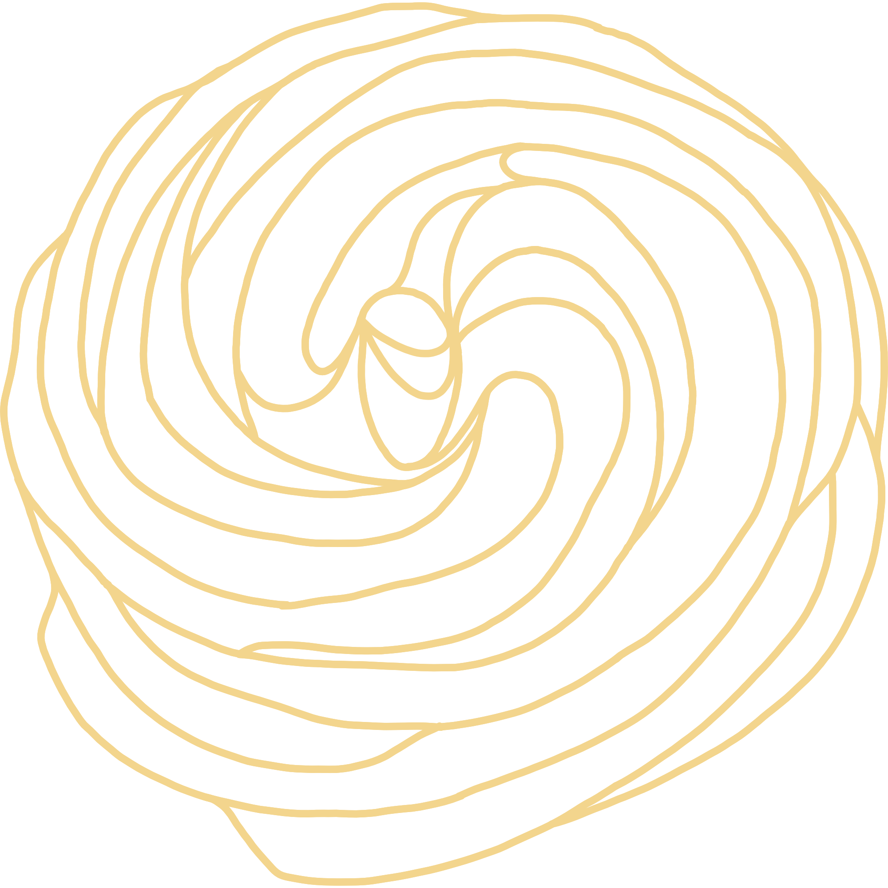
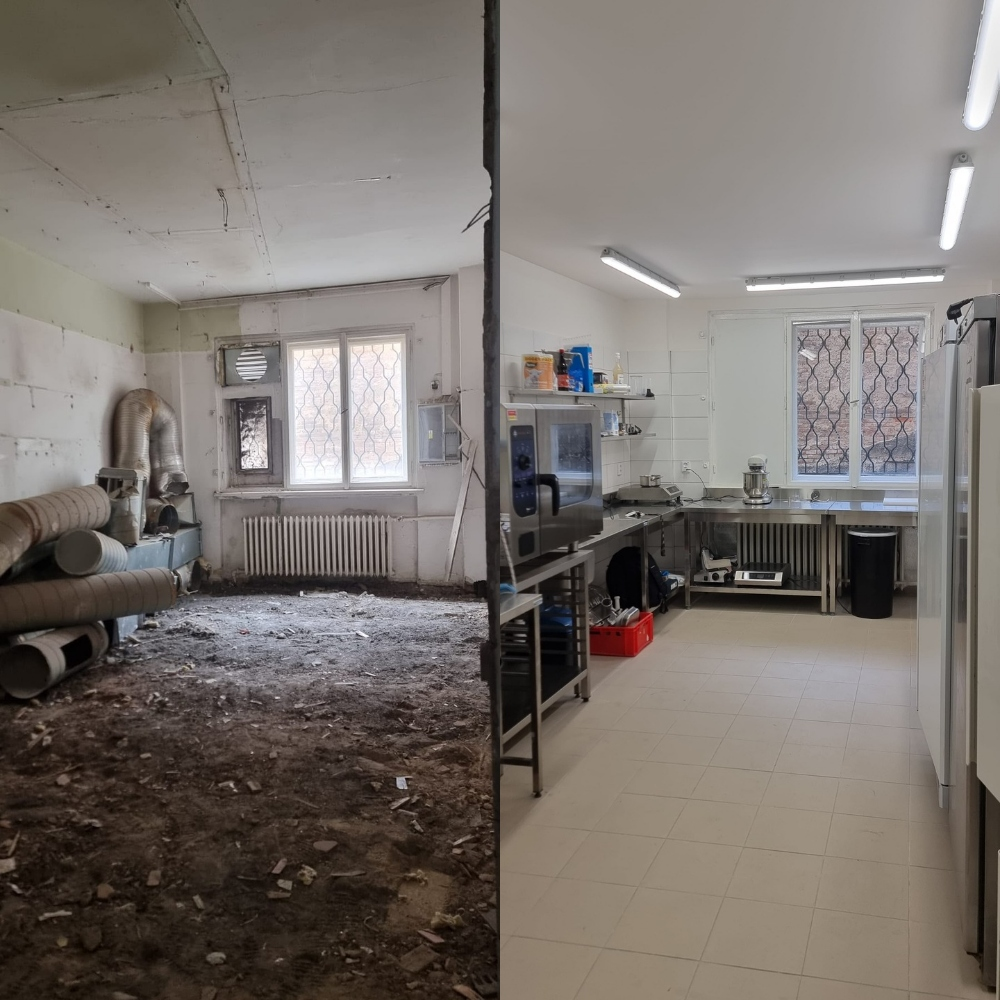
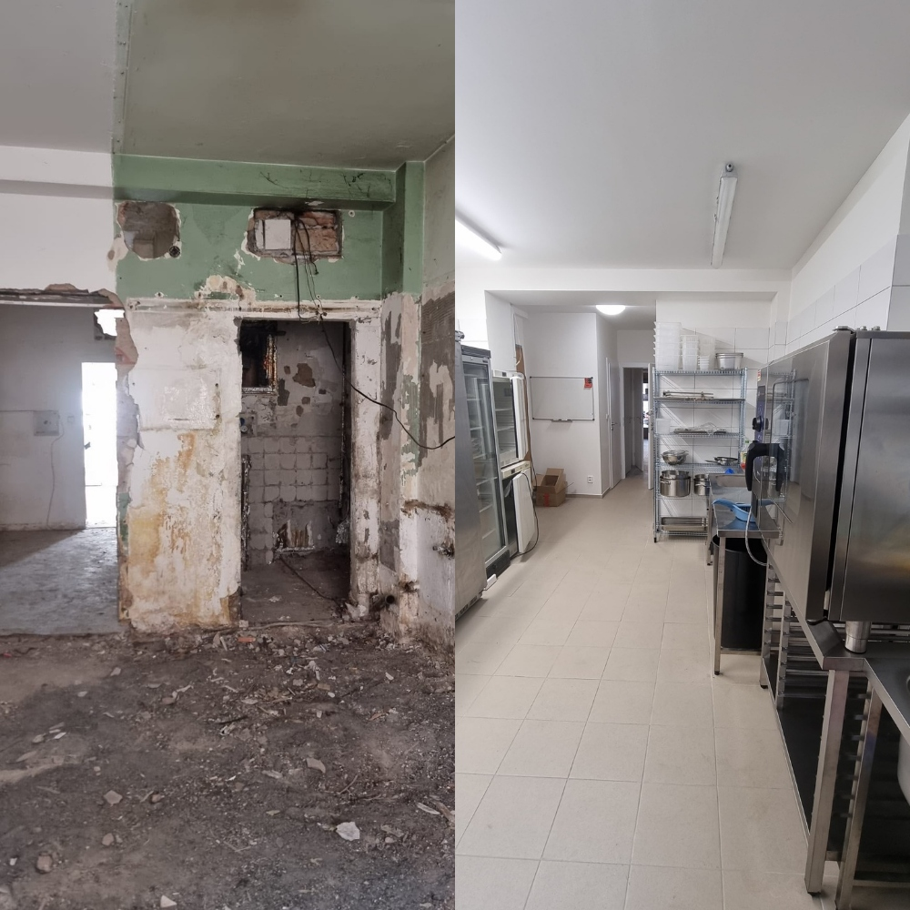
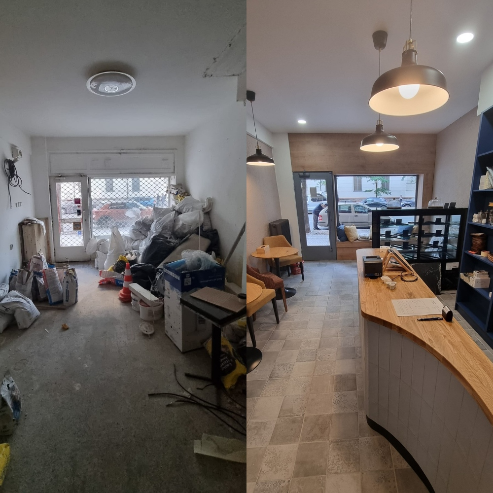
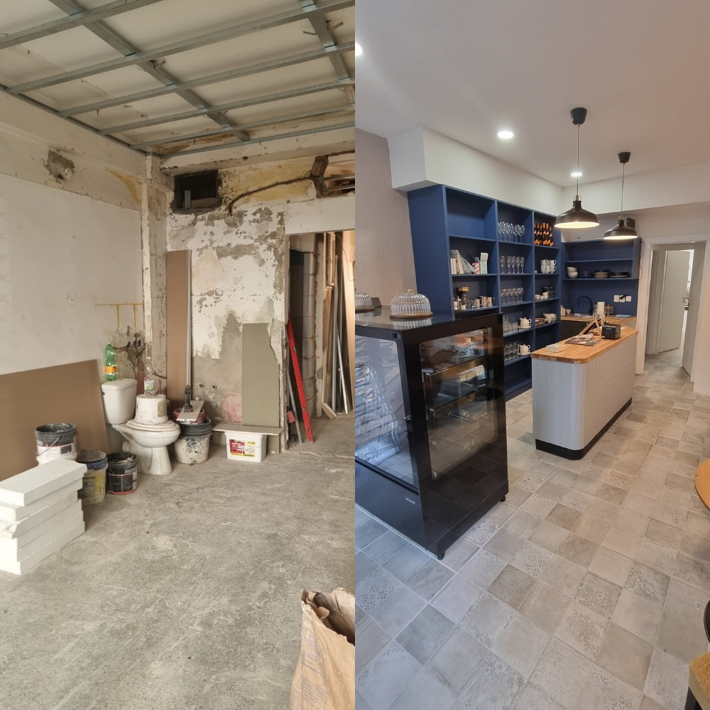

Větrník, česká cukrářská klasika
Větrníkovo, jak název napovídá, je bistro-cukrárna založena na jednom produktu – větrníku. Kořeny tohoto tradičního dezertu sahají údajně až do dob Kateřiny Medicejské, se kterou v 16. století přišla do Francie i tehdejší podoba odpalovaného těsta. Jeho receptura se v průběhu staletí měnila a zdokonalovala, až se došlo k pâte à choux. Samotný větrník pochází z přelomu 19. a 20. století, kdy čeští cukráři dle francouzských principů přípravy odpalovaného těsta přišli s vlastním, robustním větrníkem. My chceme tomuto dezertu vrátit jeho správné místo.
Naše větrníky
Nabízíme jak klasický karamelový větrník, tak i jiné sladké či slané variace. Vše, co najdete u nás v nabídce, pečeme ručně za použití kvalitních surovin. Zvláštní důraz klademe na chuť a kvalitu každého jednoho větrníku. Věříme, že naše zásady a neotřelé kombinace posouvají klasiku do nových podob, ze kterých si vybere každý.
Kdo za tím stojí
Tým, který stojí za podnikem Větrníkovo, spojují nejen zkušenosti a nadšení pro gastronomii, ale i hodnoty, které do něj vnášíme. Zakládáme si na poctivosti, kreativitě a osobním přístupu. Našim cílem je vytvořit místo s originálním nápadem, které je přístupné všem. Naše zázemí v pražských Holešovicích jsme povznesli doslova z nuly na sto. Prostor prošel kompletní rekonstrukcí, abychom vytvořili místo, kde se jak my, tak i naši zákazníci cítíme dobře. Těšíme se na vaši návštěvu.




Kontakt
Větrníkovo s.r.o.
IČO 24899976
Otevírací doba
Po – Pá: 8:00 – 17:00
So – Ne: zavřeno
Adresa
Komunardů 1490/47
170 00 Praha, Holešovice